Orientation
- Outline
- People
- Computer setup
- The workshop proper
Outline
Schedule
The workshop will be a mix:
- Me talking and you asking questions or observations.
- Activities, called “Your turn”
- Questions for you to figure out
- Systems for you to design
- Demos that you run, but don’t alter.
- Projects, which are like demos, but you alter/fix them.
As you undertake activites, please:
- engage your neighbors in them
- pull in a TA (or me) to the discussion
Schedule
See the GitHub repo for the course, here.
Logistics
- Location: Continental Ballroom rooms 1-3, Ballroom floor
- WiFi: Network: rstudio20, password: tidyverse20
- GitHub site (short link): https://rstd.io/conf20-intro-shiny
- Community page
- Lunch: On our floor: 12:30 - 13:30
- Code of conduct
People
People
| Danny Kaplan | Sara Altman | Dean Attali | Randy Pruim | Homer White |
|---|---|---|---|---|
Danny Kaplan
- Professor of Applied Math and Statistics at Macalester College
- First use of R in a classroom in Western Hemisphere (likely)
- First use of RStudio beyond JJ and Joe
- First client for Shiny
- Textbook Author
Sara Altman
Something about Sara
- I teach an introductory, project-based data science class at Stanford
- I create open materials and tools for learning and teaching data science and R
Dean Attali
- “I love shiny so much that I decided to make that my job.”
- Creator of “Shiny Case Studies” course — an interactive, online video course
- Second highest all-time answerer in the “shiny” tag on StackOverflow
- “If anybody needs any help with Shiny I’d be happy to talk.”
Dean Attali, President & CEO
AttaliTech Ltd, http://AttaliTech.com
Randy J. Pruim
- Professor of Mathematics and Statistics at Calvin University
- Has been teaching with R since 2002
- Once knew every Rstudio employee by name — all three of them
- Maintainer of several R packages, including mosaic and ggformula
- Textbook author
- Foundations and Applications of Statistics: An Introduction Using R
- Gems of Theoretical Computer Science
Homer S. White
- Chair and professor of mathematics and computer science at, Georgetown College, a small liberal arts college in Kentucky.
- Teaches introductory computer science and data science with R
- Author of several R packages used in the teaching of undergraduate statistics
- Early enthusiast of Shiny.
Contact: 502-863-8307 Homer_White@georgetowncollege.edu
Computer Setup
Computer Setup
You’ll need …
- A development machine/server: RStudio
- A Shiny server
Development organization
When running R on your own machine, the computer serving your app is your server.
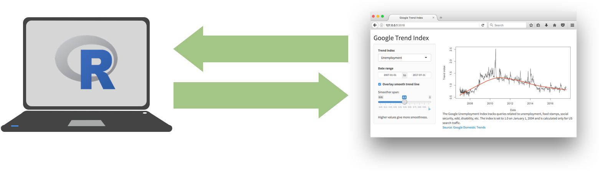
Almost all your time will be spent in this configuration, but it is exceptional.
Deployed app organization
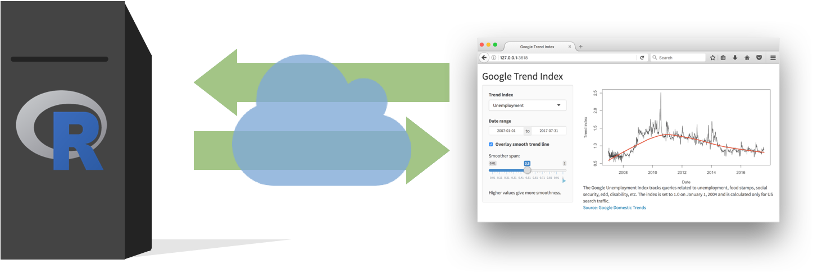
Your development machine is not in the picture.
Set up your development server now
Strongly recommended … RStudio.cloud
- This avoids possible problems with versions, installing packages, etc.
- Follow this link: rstudio.cloud/project/865256
If you must use your own machine …
- Make a new project from https://github.com/rstudio-conf-2020/shiny-start-finish
- Be prepared to install packages. See
Packages-installed.Rin root directory of project.
Navigate to Projects/Project-1-build-UI/app.R, open in editor, and run.
Now, set up your deployment server
If you already have a Shiny server available, you can use that.
Otherwise …
Go to shinyapps.io and set up a free account.
Use your Google credentials or something similar.
File Organization
Our Workshop Materials
A single R project, available as
- A GitHub repo at https://github.com/rstudio-conf-2020/shiny-start-finish or the short-link https://rstd.io/conf20-intro-shiny.
- always up to date
- An RStudio.cloud project clonable at https://rstudio.cloud/project/834721
- once you clone this, it won’t be updated.
- you can clone a new one if you want.
The workshop’s R project
- Root directory
Slides/- Whole collection in
MAIN.html/MAIN.Rmd - Individual units in separate
.Rmdfiles
- Whole collection in
Projects/- Separate directory for each project
- Some projects will span multiple sessions of this workshop, e.g. UI or server …
- Work in the directory itself, modifying the files as need be.
Sandbox/- For impulsive short demos
Slides/
Almost all the slides are in individual topic-oriented files.
- These are regular
.Rmdfiles. - You may find these easier to follow (in
.html) and make notes in (in.Rmd). - If you’re not sure which file something is in, look in
MAIN.Rmdor ASK.
Your turn
- Open up the project.
- In
Sandbox/, open a blank shiny app.
If you don’t have a clear view of how to accomplish (2), ask a neighbor. But, as you’ll see, I’ll suggest another way.
Your turn … but my way
We’ll do this particular one in Sandbox/
- Open an ordinary R script file
- Type
shinyappand leave the cursor after the finalp - Press Shift+Tab
- This will expand
shinyappinto starting code. - This is called a “snippet”, but this is the only one we’ll use.
- This will expand
- Save the script (say,
newapp.R?) in theSandbox/directory and run it. It should be a working Shiny app, but not an interesting one. - Stop the app by pressing .
Why this way?
shinyapp then Shift+Tab
- Avoids having to delete the boilerplate contents of
ui.Randserver.R. - Takes away some of the atmosphere of magic.
As you’ll see, we will use magic as a metaphor, but nothing’s really magic, just choices made by the Shiny designers (esp. Joe Cheng) to exploit built-in features of R to do non-R-like things.
Our unusual file organization
We’re going to do things in what will be an unfamiliar way.
- App
.Rfiles will be very short and can have any name, e.g.app-first.R,app-second.R,calculator.R,chess.R, … - The guts of the app will be in other
.Rfiles, with names likeserver-part-1.Rorui-keyboard.R, etc.
This will break up code into manageable chunks.
Caveat for much later: When we deploy the app to a server, we’ll have to put it in its own directory and call it app.R.
What is a shiny app?
Every Shiny App is a webpage
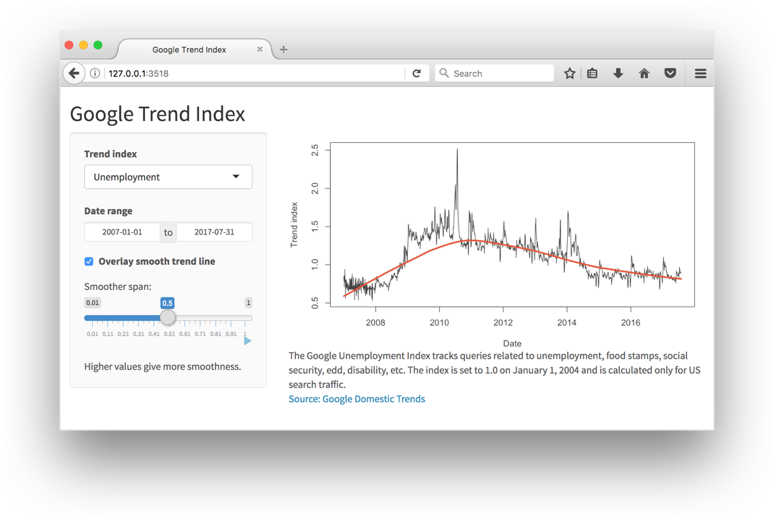
Included in the webpage:
- HTML & CSS
- JavaScript
Behind the webpage:
- An R session (on a computer)
- (optionally) Persistent storage
Creating an App involves
Behind the scenes
- Write basic software to make graphs, access persistent storage, …
From RStudio
- Construct a user interface with Shiny functions
- Connect (1) to (2) with reactive logic
Deployment to server
Usually this is semi-automatic.
In this workshop, you’ll use …
- shinyapps.io
- RStudio Connect
A metaphor … The Wizarding World
Two kinds of programming worlds in a Shiny app:
- Muggle world.
- ordinary R programming: functions, packages, …
- Wizard world.
- reactives
- functions without arguments
- values that can’t be changed by normal assignment
<- - packaged in a “server” function (usually)
The wizard world can reach out to the Muggle world … but not vice versa.
An introductory app
Writing our First App
The file, app.R
Everything is in this one file, but there’s no requirement for that.
Alternatives:
- separate
.Rfiles for the various components, sourced intoapp.R - functions provided by a package
- mix and match
app.R is an ordinary R script
You can run in the normal ways, e.g. cmd-p, source-button, …
Because of the call to shinyApp() (last line), the RStudio IDE gives you a “Run” button.
But you can work with this file outside of RStudio if you wanted to.
Start in the Muggle world
- Ordinary package loading with
library(), then - Defines a function,
muggle_plot().- since it’s in the Muggle world, it’s a perfectly ordinary function with arguments.
- I wrote it as a function because I know what’s coming.
- Even simple functions can be subtle (e.g. the
!!xvar), so be sure to test and debug it in the Muggle world.
Your Turn: Evaluate the first several lines of app.R, then run the test of muggle_plot().
Specifications for User Interface
- The functions
tagList(),h2(), andp()are from the<htmltools>package. - They are perfectly ordinary functions. They generate HTML – essentially a character string.
- The functions
actionButton(),plotOutput(), andtextOutput()are from the<shiny>package and are also perfectly ordinary functions. They also generate HTML.
Your turn: At the console, run one or more of the individual lines in the user interface. What does the result look like?
The bridge from the Wizard world to the Muggle world
I’m calling it reactive_logic but it’s usually called “server”.
- arguments are always
input, output, session - the contents look ordinary, but they are highly stylized:
- assignments to
output[[name]] - calls
<shiny>functions such asrender___(). Others we will see:observe(),react(),isolate(), …
- assignments to
Your turn: At the console, run renderText("hello"). What’s the value of this expression? Are their side effects?
Invoking the app
Uses the objects we created: user_interface and reactive_logic.
Your turn:
- What kind of objects are
user_interfaceandreactive_logic? Hint: Useclass() - What kind of object is produced by
shinyApp()? Hint: Name the objecthoo <-and look at theclass(). Then “print” it.
Modify the App
Just to get an idea of what you already know.
Your turn:
- Don’t display the button message until the button value is > 2.
- Add
selectInput()s for the x-variable and y-variables. - (Aspirational) Connect the x- and y-selectors to the plot. Nota Bene: We haven’t yet covered how to do this.
Deploy the app
With the app.R file open for editing, press “Run App”
You will be asked to set up some things relative to your ShinyApps.io account.
Your turn: Try to deploy the app. If you succeed, you can be a resource for your neighbor who didn’t have such good luck.
If you don’t succeed, ask a TA for help during a break. We’re moving on and will return to deployment tomorrow.
Building a UI
Three conceptual levels
It’s helpful to divide the ideas behind implementing a UI into three conceptual levels.
- Instantiating input and output widgets
- Frameworks for layout
- Organizing within framework elements
Widgets
Project-1
The file app.R:
library(shiny)
source("muggle.R")
source("UI_starting.R") # defines UI <-
Server <- function(input, output, session) {
source("Server.R", local = TRUE)
}
shinyApp(UI, Server)Your turn: Open app.R and run the app. Exercise the inputs around to confirm that they work.
The UI
UI <- tagList(
h1("A Bag of Widgets"),
p("Here are my widgets:"),
sliderInput("fred", "Value:",
min=0, max=100, value=55),
selectInput("annie", "Pick an animal",
choices = c("antelope", "bear",
"chicken", "dove")),
textOutput("felix"),
plotOutput("fiona")
)
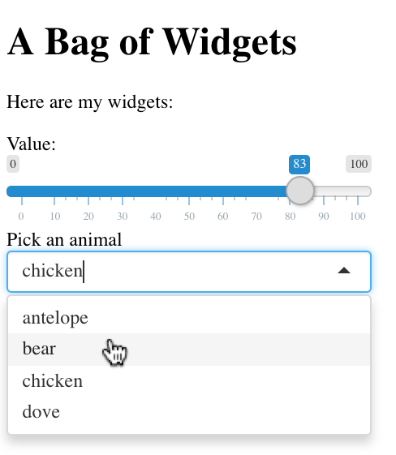
Question: Why don’t we see the textOutput() and plotOutput()?
Many Shiny inputs
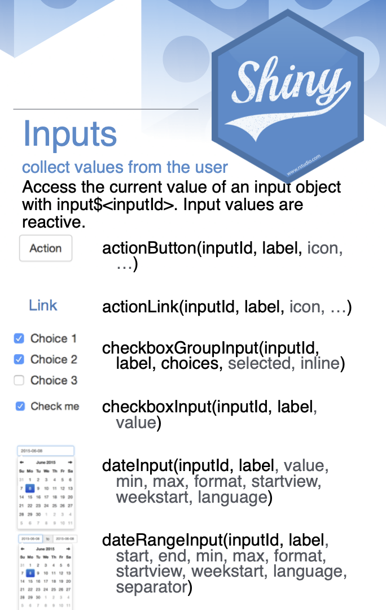
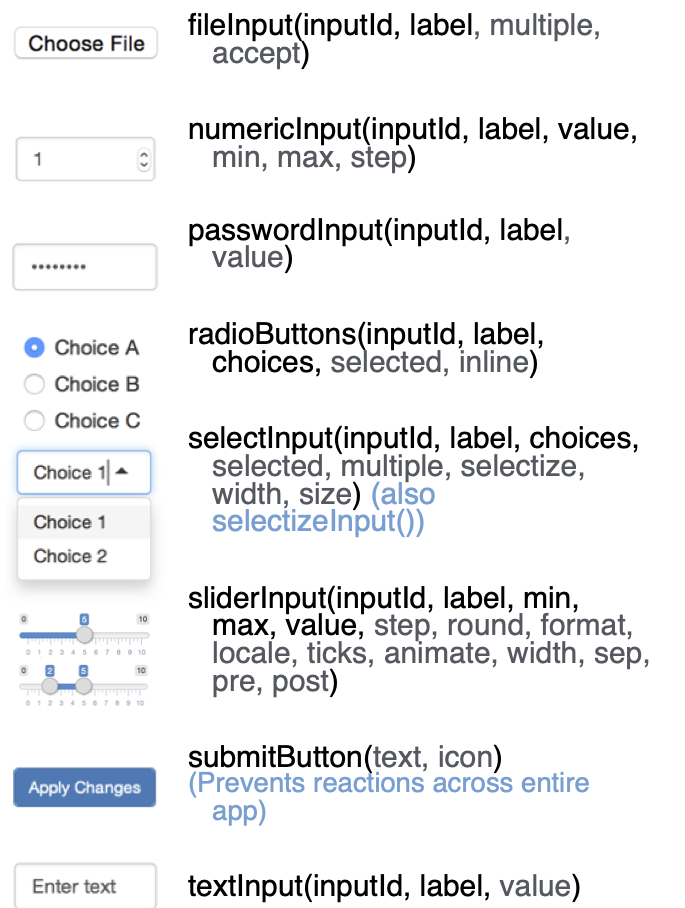
UI Outputs
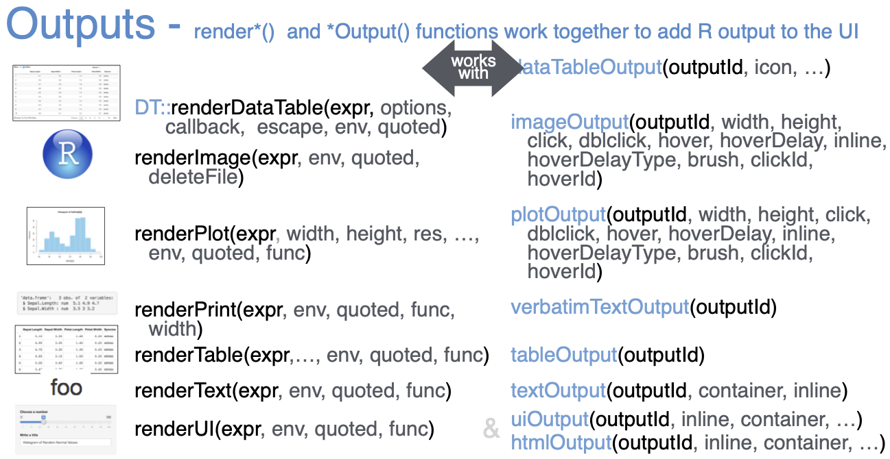
Widgets are HTML
<button id="fred" type="button" class="btn btn-default action-button">?</button>An HTML Example
See Projects/Project-2-calculator
UI defined in keyboard.R
Don’t forget these “widgets”
tags$p(...) tags$h1(...) tags$h2(...) tags$h3(...) tags$h4(...) tags$h5(...) tags$h6(...) tags$a(...) tags$br(...) tags$div(...) tags$span(...) tags$pre(...) tags$code(...) tags$img(...) tags$strong(...) tags$em(...) tags$hr(...)
Or the wrappers, …
p(...) h1(...) h2(...) h3(...) h4(...) h5(...) h6(...) a(...) br(...) div(...) span(...) pre(...) code(...) img(...) strong(...) em(...) hr(...)
Project 1
Project 1
Remember, our first project was “Project 0”. Now we’re on to the real projects!
Go to Projects/Project-1-build-UI/
Add UI inputs
Edit UI_starting.R to add several of these widgets to your UI. Have fun with the choices. You can see code examples at https://shiny.rstudio.com/gallery/widget-gallery.html
- actionLink
- checkboxInput
- checkboxGroupInput
- radioButtons
- passwordInput
- textInput
Verify that the UI works. How? Run the app.R file.
Display UI input values
Preface: The glue() function is a nice way to embed values in strings.
## The value of 3 + 7 is 10.TASK: Add an element to your server to display in output$felix a string with the values of the UI inputs you added.
Frameworks & Layouts
Frameworks
Organizes UI elements.
Allows sensible grouping of elements.
Some high-level frameworks
fluidPage()–fixedPage()– just rows and columnsfullPage()– fills up the browser windowtagList()– just sequentialnavbarPage()– use withtabPanel()andnavbarMenu()miniUI::miniUI()– for add-ins or mobileruntime::shinyin an Rmd file – for reports
fluidPage()
An organization using the Bootstrap CSS/JavaScript/HTML system.
Define containers based on a 12-unit wide grid.
Return to Project 1
We’re now going to throw away the original UI for Project 1.
- Look at
Muggle.R. What kind of thing isFirst,Second, and so on in terms of user interfaces. - Modify
app.Rfile to source the UI defined inUI-languages.R. - Notice that the highest level container in
UI-languages.RistagList().- What do you expect to happen when–don’t do it yet!– you replace
tagList()withfluidPage()? Talk to your neighbor about what you expect to put a stake in the ground. - Now do the replacement.
- What changes in the display of the app? Is this what you expected? If not, speculate on what’s wrong?
- What do you expect to happen when–don’t do it yet!– you replace
Need to use the grid system!
Nothing much was different between fluidPage() and tagList() in the previous exercise:
- Usual all-in-a-line layout.
- Fonts are different.
In order to get things laid out, we need to specify rows and columns for the 12-unit Bootstrap grid.
Use fluidRow(...) to group elements in a row.
Use column(width=..., ...) to group elements in a column of the indicated width.
Your turn
Edit UI-languages.R to change the UI to this.
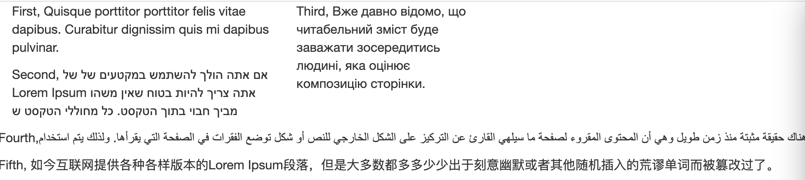
The tree
UI <- fluidPage(
fluidRow(
column(width = 4, First, Second),
column(width = 3, Third)
),
fluidRow(Fourth, Fifth),
title = "Fluid!"
)Your turn: Draw this as a tree with First, Second as the leaves and UI layout statements as the nodes. Hint: The root is at fluidPage().
What’s up with title = "Fluid!"?
fluidPage() is responsive
The layout depends on the width of the device.
| Narrow window | Wide window |
|---|---|
| 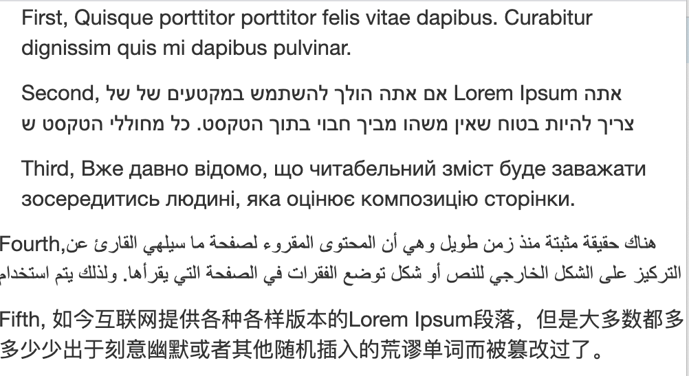 |
Your turn: A new tree
Draw this interface as a tree. Remember, the nodes are UI layout functions (like column()) and the leaves are First, Second and so on.
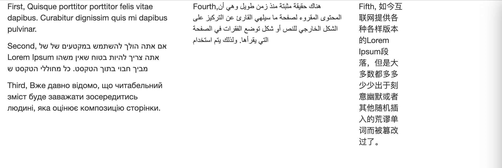
Modify UI-languages.R to implement this tree.
Answer:
Your turn: Another tree
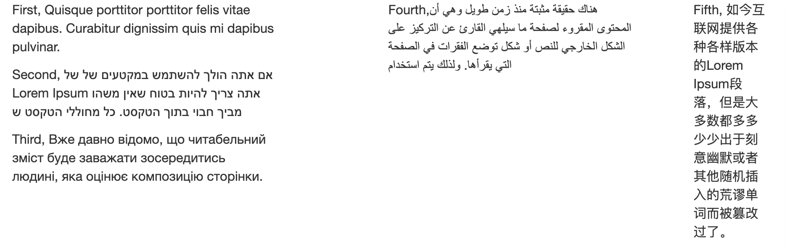 Implement this UI. You’ll need to use both the width and offset arguments to column().
Answer:
Convenience UI layout functions
titlePanel()sidebarLayout()withsidebarPanel()&mainPanel()tabsetPanel()andtabPanel()splitLayout()flowLayout()verticalLayout()wellPanel()
Your turn: Make this
Use fluidPage(), titlePanel(), and wellPanel()
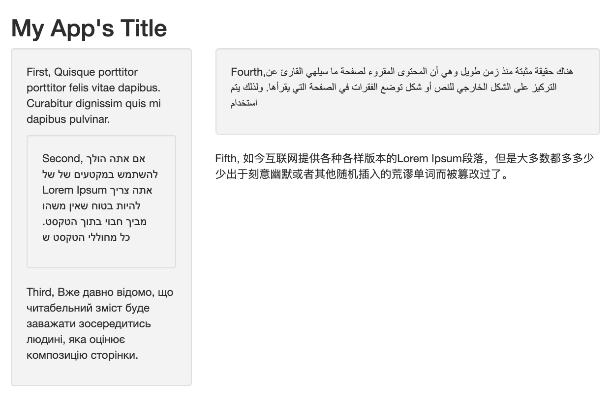
The tree
Your turn: Make this
Use fluidPage(), sidebarLayout(), sidebarPanel(), mainPanel()andwellPanel()`
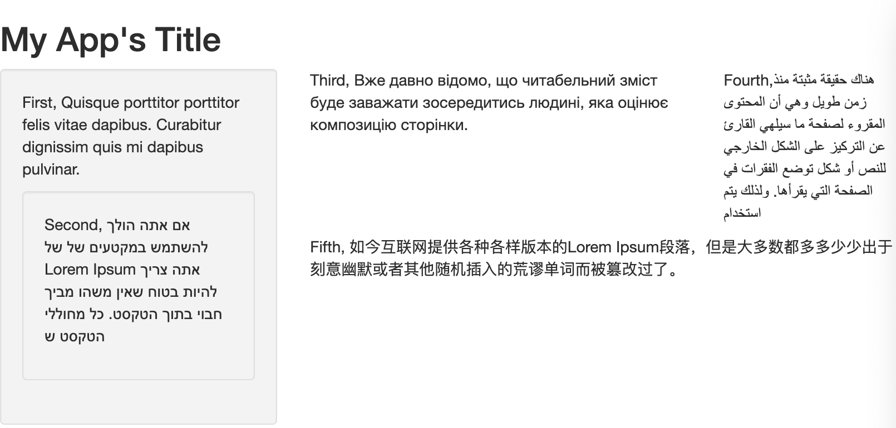
High-level layouts
tagList()– just sequentialfluidPage()– Bootstrap gridnavbarPage()– use withtabPanel()andnavbarMenu()miniUI::miniUI()
navbarPage
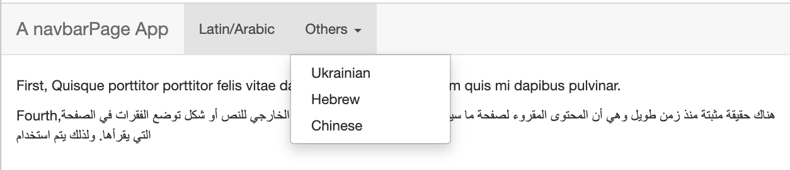
miniUI
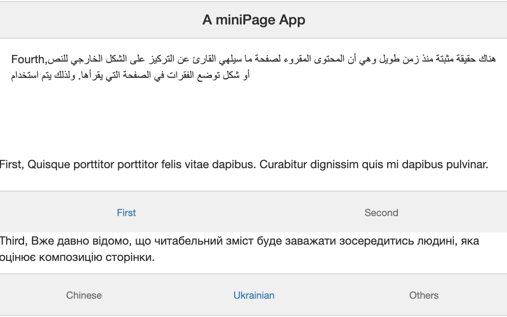
The tree
miniUI::miniPage(
miniTitleBar("A miniPage App"),
miniContentPanel(Fourth),
miniTabstripPanel(
miniTabPanel(title = "Chinese",
miniButtonBlock(
actionButton("reset", "Reset to defaults"),
actionButton("clear", "Clear all")
),
Fifth),
miniTabPanel(title = "Ukrainian",
miniTabstripPanel(
miniTabPanel(title="First", First),
miniTabPanel(title="Second", Second)),
Third),
miniTabPanel(title = "Others",
First,
Second,
Third)
)Exercise n-1
With your neighbor, draw the UI tree on paper.
(images/ggextra.png](https://daattali.com/shiny/ggExtra-ggMarginal-demo/)
Exercise n
The Economist’s Big Mac index visualizer isn’t written as a Shiny app (I think!), but sketch out how you would write a Shiny app to mimic it.
If you haven’t had enough …
(images/twin-cities-busses.png](https://shiny.rstudio.com/gallery/bus-dashboard.html)
Background: Functions
Function + Environment = “closure”
Functions are containers for R code.1
Constructing functions
- usually, the container is created by the keyword
function - arguments are in parentheses.
- R code placed in the curly brackets defines the body of the function.
- The code in the body is not evaluated when the function is constructed.
- A reference to the environment in which the function was created is carried along with the function.
Evaluating functions
- Create an environment that binds values to the argument names.
- The parent of this environment will be the one carried along with the function.
- Run the code in environment (1) (which provides access to the parent environment)
- Erase environment (1) but return a selected object as the value of that function.
Your turn: Components of a function
In your console, create some R function with three arguments and two lines of code. Bind it to the name my_function.
Access the three components individually with:
formals(my_function)body(my_function)environment(my_function)
What is the class of each of these components?
What do these computations return?
all.names(body(my_function))all.vars(body(my_function))
Persistent storage by functions
Often, especially in Shiny, a function will make reference to objects that remain extant between calls to the function.
- In some languages, not R, there is something like a
staticorpersistentdeclarative that creates persistent storage. - Beginning programmers often create objects in the Global environment that will be available to any function to access and mutate.
- This is a risky technique. Functions that you’ve never heard of my alter the persistent objects in any way whatsoever.
- In R, reliable persistent storage is often created by exploiting the function creation system. This technique uses
function()within the body of another function.
Example: a counter
make_counter <- function(start = 0) {
val <- start
list(
incr = function() {val <<- val + 1},
decr = function() {val <<- val - 1},
reset = function(start = 0) {val <<- start},
value = function() val
)
}cars <- make_counter()
trucks <- make_counter()
cars$incr(); cars$incr(); trucks$incr(); cars$incr()
cars$value()## [1] 3## [1] 1Other ways to capture unevaluated code
The <rlang> package offers another system for doing this.
Your turn:
- Enter the above assignments in your console.
- What are the values of
xandyafterward? - Try
class()andall.vars()onmy_codeandbigger_code - Run
eval(my_code). What are the values ofxandynow? - Run
eval(bigger_code). What are the values ofxandynow?
Back to the Knight Bus
Shiny uses this technique in its “server” function.
The function f1 knows to look to it’s birth environment for the value of input.
shinyApp() sets this up.
Reactives
Reactives
Reactives are R objects created by some of the functions from the <shiny> package:
reactive()observer()reactiveEvent()observeEvent()reactiveVal()reactiveVals()
You, the programmer, create these objects explicitly in your code.
Inputs and Outputs
It’s helpful to imagine that reactives are also created by calls to constructors of inputs and outputs, such as
selectInput()plotOutput()- and so on
ULTIMATELY, it’s the HTML that matters, not the calls to constructors.
Elaboration: The constructors create HTML. When the UI HTML document is handled by runApp() it will create reactive()s for the inputs and observer()s for the output.
The Shiny server
- a process running in an R session.
- might be on your machine
- another machine that serves up the HTML and responds to events.
- NOT the object conventionally called
serverwhich is just a function. - It would be more fun if the function you create were called
Knight_Busrather thanserver.
The Knight Bus
Comparison
The Knight Bus:
- a bus
- has three decks
- safely conveys wizards from the muggle world to the wizarding world.
The “server” function:
- a function
- has three arguments
- safely conveys code from the ordinary world of R scripts to the world of
runApp.
knight_bus <- function(input, output, session) {
… Your code here …
}
Passengers on the Knight Bus
These are entities carried into the Wizard world.
Useful to think of three types of passengers
| inputs | conductors | observer |
|---|---|---|
| 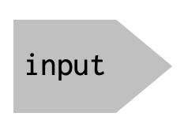 | 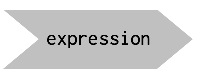 | 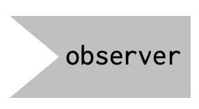 |
Putting wizards on the bus
| inputs | conductors | observer |
|---|---|---|
actionButton() |
reactiveVal() |
textOutput() |
| and such | reactive() |
observe() |
reactiveEvent() |
observeEvent() |
OUT OF PLACE: Always use curly braces. This helps identify the source code position for debugging.
The wizard world
Wizards have two kinds of state:
- Their value, e.g.
input$x_var, a plot, a table - Their validity
- valid, invalidated, suspended
Wizards have connections:
- An input only has outward connections.
- An observer only has inward connections.
- A conductor has both inward and outward connections.
Connections
The reactive model is driven by connections that you, the programmer, made between passengers.
You define/establish a connection only at the recipient.
Example: See app at Demos/pythagorean-1.R
pythagorean-1.R: Inputs
Create the inputs
pythagorean-1.R: Outputs
Describe the outputs
server <- function(input, output, session) {
output$C <- renderText({
sqrt(input$A^2 + input$B^2)
})
}Mentioning input$A and input$B will create a connection when the app is run.
pythagorean-1.R: Conductors
There are none.
Your turn: How can you be sure there are no conductors?
The Shiny evaluation cycle
- Wait, until something changes, e.g. an input.
- Send message to the input’s next of kin, invalidating them.
- Each of next of kin then invalidate their own next of kin.
- As each message is sent, the recipient is struck off the sender’s next-of-kin list.
- When all the messages in (2) have been sent … there is very likely one or more outputs that have been invalidated.
- Run the instructions for each of those invalidated outputs, one output at a time.
- Each call to a conductor or input will produce a value and add a connection on the conductor’s or input’s next of kin list.
- Back to (1)
Making a connection
When a downstream reactive makes a call to a conductor or an input, that call is arranged to carry the ID of the caller.
Receiving the call, the conductor or input …
- Adds the ID of the caller to a list: Next of kin. (Dark arrow)
- If the recipient is a conductor … carry out its own calls and calculations, potentially creating new connections. This creates a value.
- Inputs don’t have to do this. The user sets the value.
- Conductors cache their values, which is what they will return if they are called when in a valid state.
- Return the value to conductor or observer that made the call in the first place.
Using a connection: invalidating
An input or conductor can be invalidated
- input: the user interacts with the app
- conductor: something changes upstream
Once invalidated, the node
- Sends a message to each next of kin that it is now invalid.
- Deletes that node from the next of kin list. (Like checking off a to-do list.)
Finished invalidating?
When all the next of kin have been (recursively) invalidated, Shiny starts the next part of the cycle.
- Pick a random observer that is invalid.
- Evaluate the instruction code for that observer.
- Whenever the code calls a conductor or input, make a new connection. And so on up the tree.
- When instruction code is complete, mark the observer as valid.
- Back to step (1). If there are no invalid observers left, the cycle is complete and there is nothing more to do: Idle.
pythagorean-1.R: Watching the action
- Open the file.
- Press the Run App button
- Make a couple of changes to the inputs and observe the changes to the output.
- Stop the app process
Back in the console … Let’s go to the videotape!
reactlogShow()
Using reactlogShow()
Dark lines show connections that have become apparent when “calculating” a node.
Light lines are connections that have not yet become apparent.2
Let’s rewind to the beginning.
Then one step at a time, and narrate.
Adding a conductor: pythagorean-2.R
server <- function(input, output, session) {
C2 <- reactive(input$A^2 + input$B^2, label = "C2")
output$C <- renderText(sqrt(C2()))
}Run the app and reactlogShow()
Adding another conductor: phythagorean-3.R
Make a cycle and show the reactivity log
Perhaps hadley’s celsius/fahrenheit
Note: Want a reactive to run?
Write an observer that does nothing but calls that reactive.
Isolate
What isolate does.
Should you use reactive() or observer()?
Inputs and outputs are obvious.
What about reactiveVal() – use only in an observer()
Whatever you might do in an observer, you could also do in an output renderXXXX
Joe Cheng’s haiku:
Keep your side effects
Outside your reactives
Or I will kill you
When should you use eventReactive() or observeEvent()?
Once you’ve made this choice, – or their isolated equivalents, eventReactive() or observeEvent()
validate() and req()
Actions and side effects
Reactive: Calculate a value without side effects. Or cache a value.
Observer: Peform actions, with side effects. What kind of side effects. Note that observers can’t be hidden behind a tab, so they will always run. If you don’t have side effects in an observer, there’s no reason for it.
- writing to disk, upload to server, …
- setting reactiveValues – never do this in a reactive.
- set other input values. updateXXX should only be in an observer. You can’t rely on a reactive to execute.
Project 3: Plot a data frame
Orientation to the project
This is to be an app where you can select a data frame from a set of choices, then select a response and explanatory variable. The app will:
- Plot out the data frame: response vs explanatory
- Show the head of the data frame.
- Print out a regression report
- Show the codebook for the selected data
A starting app
A working, but incomplete version of the app is in
Projects/Project-5-DF/app-0.R
Your turn: re-organize code
The app is already a bit crowded. So …
- Pull out the UI into a file
UI.Rand the server intoServer.R. - Source these into
app-0.Rin the appropriate place.- The
Server.Rsourcing is tricky.
- The
- Make sure it still runs!
Task 1: Examine the UI
- What about the
selectInput()s makes it so that the app starts with a little message (e.g., “Choose data frame”) instead of a selected value?- Find where in the documentation for
selectInput()this feature is described.
- Find where in the documentation for
- The app is to display the data in 4 different ways. (See above.) Four output widgets have been provided.
- Do the output widgets have a sensible type?
Task 2: Tabify the app
Too ugly to have all four output displays one after the other. Re-arrange things to:
- Put each output widget in its own tab, with an informative label.
- Put the inputs in the same tab as the table display.
- Make sure the tab in (2) is displayed at start-up.
The reactive logic
I’ve provided you with two components of the reactive logic.
- A reactive:
Raw_data()that uses one of the inputs to provide an appropriate data frame. - A renderer for
outputCodebook. This uses the name of theinput$frameto fetch the documentation. (It’s a little involved; that’s why I’ve given it to you.)
When you choose a data frame, the codebook should be available in its tab.
Task 3: A small extension
Your task now is to fill in appropriate choices for the response and explanatory input widgets.
Hints: Use updateSelectInput(). The choice names will be names(Raw_data()). Think about whether this operation should be in a reactive() or an observer().
Task 4: Showing the data
Add appropriate server logic to
- Display the head of the selected data in the table.
- Plot the response versus the explanatory variable.
Keep in mind that only the response and explanatory variables are to be shown.
Question: You’ll be using renderXXX() to make the actual displays. Is there something in common that could be handled well by a reactive()?
Task 5: Show a summary of the model
Display a summary of the linear model response ~ explanatory in the appropriate tab.
Hints:
paste()is a good way to construct the formula.- The text form of
summary(lm(...))can be had withcapture.output(). renderVerbatimText()really wants to work with a single string, not a string vector.
Task 6: Annoying errors
You might see a console error: “undefined columns selected” and a little flash of a red error message just before the table is displayed.
Kill these.
Hint: Block the evaluation of the problematic reactive until all the inputs it needs are valid.
Endless tasks
As you play with the app, you’ll see additional problems, such as:
- not so nice that the response and explanatory variables are the same when the selectors are updated.
- arrange things so that no assignment to response and explanatory is made until the user does so herself.
- exclude the selected response variable from the set of choices allowed for the explanatory.
- when the response variable is not numeric,
lm()complains. In such a case, arrange for the response variable to be binary: the most common level and “others”. Also, arrange the model to do logistic regression.
TUESDAY
Recap
Review a solution for Project 3
Not ready? Punting with req()
How to avoid triggering reactive logic when inputs are not ready.
Project 6
In Project/Project-6-houses
This is an Rmd document set up to run as Shiny.
But you will have to grab the file from the repository:
Project 2
Project 2: Calculator
In the Projects/Project-2-calculator directory are several files.
We’ll start with app.R and keyboard.R.
Phase I: Extend the UI
- Confirm that you can run
app.Rto create a UI as might be suitable for a calculator. - Glance through the functions in
keyboard.Rto get an idea of how you might add new keys. (Hint: It’s not hard.) - Add several keys: square-root, exp, ln, sin, …. Keep in mind, these keys don’t have to do anything yet except allow themselves to be pushed.
Phase II: Start writing the server
The file server-starting.R contains statements that call some of the Shiny functions to create reactives. These statements will be source()d into the server() function, as if they were typed there.
To start the server:
- Create a reactive value
entry_string. This will store the number being created at the keyboard. Initialize it to a blank string:"".- which of the Shiny functions to make reactives will you use?
- Arrange that the value of
entry_stringis at all times displayed in thecurrentUI output widget.- which of the Shiny functions to make reactive displays will you use?
- Write an observer which, when the “one” button is pressed, concatenates a “1” to the
entry_string.- Use
observeEvent().
- Use
- Write similar observers for the other 11 buttons in the 4x3 array of keyboard buttons.
- the tricky one is for “delete”.
substr()andnchar()will help.
- the tricky one is for “delete”.
Phase 3: Respond to the operation buttons
The file server-ops.R is intended to hold server commands to handle the operation button presses. It’s blank right now.
Your task is to implement a system that will determine which operation button was pressed and store a corresponding identifying string in the reactive value named last_op.
When last_op() changes
Your Turn: Taking an action when last_op changes
Read through server-ops-soln.R to see some ideas.
- Make a note of what doesn’t make sense to you or why one reactive constructor is used rather than another.
- Let’s discuss and play with changes as they come up.
Changes that don’t register
In server-ops-soln.R on lines 18, 20, 22, and so on, what’s going on? Why is last_op() being called twice, when only the second call really matters? What happens when the first call is deleted?
Hint: 3 + 2 + 4
See what happens if we change observeEvent to observe
Talk about isolate.
Debugging
Debugging
Basic methods:
- Add
message() - Add
browser()(within a reactive or observer in the server function) - Put a breakpoint (within a reactive or observer)
More advanced
put a command input in your app, evaluating it in the server and displaying the result.
putting a console in your app! shinyjs::runcode, but see this github site for the actual code, so that you can display the output in a text field.
General article: https://shiny.rstudio.com/articles/debugging.html
View reactivity
NEED TO MAKE A NICE EXAMPLE, where a connection is not being made. Maybe Pythagorus, but where we forgot to connect to B.
Load testing
Project 2 return
Augment the server for Project-2-calculator
Avoiding reactive loops: Updating inputs
You can change the value of an input
… from the server. Use update__whatever__()
Run plotDF app-1.R
Many lines have been commented out. But notice that an error message appears in red, until the choices have been sorted out.
- Put a break point at line 31.
- Operate the app.
- Figure out why the error message is being generated.
- What can you do about it?
Ans to 3: the input$response and input$explanatory are not valid indices into the data frame.
What to do?
- Put logic to return something reasonable when the indices are not valid.
- But then you have to deal with the “reasonable” output downstream.
- Block the reactive from running at all until the acceptable conditions are met.
Reactive values
Reactive values live on the server
Inputs live in the client
When an input changes in the client, a message is sent to the server and the corresponding change is made to input.
When an input is changed in the client, that message will be sent to the client, BUT the client will not write back to make the corresponding change in input.
So you have to do it in the server yourself.
Project plot_DF app 2
Add in a reactive state to hold what the values of the inputs should be!
Changes in these are instantly available whenever needed.
But they might not show up on the UI until later.
Project 3: server components
Orientation to the project
This is to be an app where you can select a data frame from a set of choices, then select a response and explanatory variable. The app will:
- Plot out the data frame: response vs explanatory
- Show the head of the data frame.
- Print out a regression report
- Show the codebook for the selected data
A starting app
A working, but incomplete version of the app is in
Projects/Project-5-DF/app-0.R
Your turn: re-organize code
The app is already a bit crowded. So …
- Pull out the UI into a file
UI.Rand the server intoServer.R. - Source these into
app-0.Rin the appropriate place.- The
Server.Rsourcing is tricky.
- The
- Make sure it still runs!
Task 1: Examine the UI
- What about the
selectInput()s makes it so that the app starts with a little message (e.g., “Choose data frame”) instead of a selected value?- Find where in the documentation for
selectInput()this feature is described.
- Find where in the documentation for
- The app is to display the data in 4 different ways. (See above.) Four output widgets have been provided.
- Do the output widgets have a sensible type?
Task 2: Tabify the app
Too ugly to have all four output displays one after the other. Re-arrange things to:
- Put each output widget in its own tab, with an informative label.
- Put the inputs in the same tab as the table display.
- Make sure the tab in (2) is displayed at start-up.
The reactive logic
I’ve provided you with two components of the reactive logic.
- A reactive:
Raw_data()that uses one of the inputs to provide an appropriate data frame. - A renderer for
outputCodebook. This uses the name of theinput$frameto fetch the documentation. (It’s a little involved; that’s why I’ve given it to you.)
When you choose a data frame, the codebook should be available in its tab.
Task 3: A small extension
Your task now is to fill in appropriate choices for the response and explanatory input widgets.
Hints: Use updateSelectInput(). The choice names will be names(Raw_data()). Think about whether this operation should be in a reactive() or an observer().
Task 4: Showing the data
Add appropriate server logic to
- Display the head of the selected data in the table.
- Plot the response versus the explanatory variable.
Keep in mind that only the response and explanatory variables are to be shown.
Question: You’ll be using renderXXX() to make the actual displays. Is there something in common that could be handled well by a reactive()?
Task 5: Show a summary of the model
Display a summary of the linear model response ~ explanatory in the appropriate tab.
Hints:
paste()is a good way to construct the formula.- The text form of
summary(lm(...))can be had withcapture.output(). renderVerbatimText()really wants to work with a single string, not a string vector.
Task 6: Annoying errors
You might see a console error: “undefined columns selected” and a little flash of a red error message just before the table is displayed.
Kill these.
Hint: Block the evaluation of the problematic reactive until all the inputs it needs are valid.
Endless tasks
As you play with the app, you’ll see additional problems, such as:
- not so nice that the response and explanatory variables are the same when the selectors are updated.
- arrange things so that no assignment to response and explanatory is made until the user does so herself.
- exclude the selected response variable from the set of choices allowed for the explanatory.
- when the response variable is not numeric,
lm()complains. In such a case, arrange for the response variable to be binary: the most common level and “others”. Also, arrange the model to do logistic regression.
Dashboards
Dashboards
Preliminaries
Nota Bene: The RStudio viewer does not display dashboards correctly. So use a web browser.
If your target is not a “normal”-size display (technical: 768 pixels or more in height), use the browser in emulation mode. - In Chrome, CMD-OPT-I brings up the console.
Flexdashboard
Set things up in YAML:
---
title: "Dashboard Value Boxes"
output:
flexdashboard::flex_dashboard:
orientation: rows
navbar:
- { title: "About", href: "https://example.com/about" }
- { title: "StatPREP", href: "https//statprep.org"}
---Layout
The navbar is described in the YAML. But everything else is ordinary headings.
flexdashboard::flex_dashboard() is an R/Markdown renderer that treats headings specially.
- First Level (
#) – a page- navigation menu with buttons for each tab
- button label is text of header
- Second Level (
##) – a row in a page. (Note: because YAML specifiedorientation: rows. Default is columns.)- header text doesn’t matter
- Third level (
###) – a box in a row- header text becomes a label, maybe integrated into a widget.
Attributes
- First level: (
#)- use
data-icon=fa-umbrellaattribute to set logo (if any). Note:fa-prefix is used, unlike with theicon()function in Shiny.
- use
- Second level: (
##)- A narrow column
{data-width=350} - Third-level elements should be in tabs:
{.tabset}
- A narrow column
Value boxes
Icons from Font Awesome
1500+ free icons
icon(“credit-card”)`
Valid statuses
Essentially, a small library of colors intended to be use symantically:
primaryBlue (sometimes dark blue)successGreeninfoBluewarningOrangedangerRed
Another dashboard format: <shinydashboard>
Unlike flexdashboards which is based on markdown, shinydashboard is based on the html-based construction kit that we used in fluidPage(), etc.
New elements:
- Top level:
dashboardPage() - Next level:
dashboardHeader()dashboardBody()dashboardSidebar()
- Containers
fluidRow()dropdownMenu()holdsmessageItem()s: from, message, icon, time, hreftaskItem()s: text, value, color, hrefnotificationItem()s: text, icon, status, href
- Potentially recursive structures
box()– a container based on Bootstrap 12-grid- can be collapsed
tabBox()– containstabPanel()s
- Terminal elements (aka "leaves)
valueBox(),valueBoxOutput(id),renderValueBox(valueBox())infoBox(),infoBoxOutput(id),renderInfoBox(valueBox())
Another format: Storyboards
I don’t see many of these, but they are straightforward.
YAML:
---
title: "A Walk through Wonderland"
output:
flexdashboard::flex_dashboard:
storyboard: true
---Storyboard items
- Each item is a third-level header (
###) - The header text becomes the content of the board
- The content becomes the big display associated with that board
- Optionally, a
---produces a side display
Example: Projects/Project-5-dashboards/storyboard.Rmd
Deploy
Get your directory in order
- Name of directory will be the name of the app
- The call to
shinyApp()should be in a scriptapp.R. - Any other files used in the app should be:
- a package that can be installed on the server
- the app directory or subdirectories of it
- available via the web
- uploadable to app
Some server options …
- Your institutional RStudio server may already be set up for deploying apps.
- Create your own server on DigitalOcean
- Use <shinyapps.io>
Setting up a <shinyapps.io> account
- This is what I use, which is probably only a testament to how little systems skills are needed.
- First level account is free.
Deploying from RStudio
How to deploy from to <shinyapps.io>.
Learnr tutorials
Persistent storage
Persistent storage
When do we need persistent storage?
- logging or recording events
Example: A scoring system for tutorials.
How to?
Prettifying your app
Example: Fancy font
See demo in Projects/Demos/Prettifying
CSS
Provides a means to set the style of any element in your app.
- Use
style=attribute when creating a tag.
- Link to an external CSS file
- Put a style tag in the header
- Call
includeCSS("mycss.css")in your UI- File should be in your app directory.
Theme CSS files
Many at https://bootswatch.com/
- download
.cssfile - change name if you like
- put in your
wwwdirectory - use one of the above techniques to include it in your app.
Your turn
- Copy the
.cssfiles fromProjects/Demos/wwwinto one of your other apps. - Insert one of the CSS files into your UI.
- Try another!
- Go to https://bootswatch.com and get yet another app.
Pro tips for selectInput() MOVE THIS
- You can have lists within lists.
You can set the initial choice to null, but display a short instruction.
selectInput("fred", "", choices = c("Choose df" = ""))
We’ll use this in Project-5-PlotDF
Project 2: Return
Let’s make the buttons prettier in the calculator.
- Add a class (of your own naming) to the buttons.
- Where do you do this?
- Add CSS that refers to that class.
ShinyWidgets
Modals
Tooltips
Add to any UI constructor `title=“My tooltip here!”.
Your turn: Try it.
Others
<bit.ly/shiny-quickstart-1>
Themes: See themes section in https://shiny.rstudio.com/articles/layout-guide.html
Shiny Modules
Motivation
Do Task 1 in project-4-modules.html.
This will set us up for understanding Shiny modules.
Shiny Modules
Shiny provides a simple but effective system called “modules” to help address two important situations:
Including multiples of the same basic functionality in one app.
Distributing Shiny functionality to be used by you or others in new apps.
Multiples of the same basic functionality
Example: An app that lets you compare different products (à la Amazon’s shopping pages). Each product has the same layout of information, order buttons, etc., but the contents are different.
Unscalable approach: You can use the tools previously introduced in this workshop to build the UI for a single product. Then duplicate this for each additional product.
BUT … You’ll have to be careful to assign distinct names to the input and output widgets for different products. And your server code will need different names for the parallel reactives and observers.
Providing app functionality for new apps
Example: I work as part of a project to help two-year college instructors learn to work with computing and data. They are often untrained in computing and shy about teaching with, say, an R console in front of a class. I write little data analysis apps that each handle specific elements of statistial methodology. All these apps have in common selecting and displaying data (like our Project 3).
Unscalable approach: Provide .R files with the reactive logic to be sourced into the function(input, output, session) definition.
But … I don’t know yet what other reactive logic the new app will have. So how do I avoid name conflicts?
The Shiny Module approach
- Create UI components inside a function that can be called many times to implement many copies of the components. Within each call, provide a unique name to each component.
- Create server components inside a function that can be called many times to … well, the same as in (1).
Implementing a Shiny module
There are only two functions that are key to building a module:
NS()handles the construction of unique names for UI components.callModule()which does the same thing for the reactive entities, matching them up to the unique names provided byns().
What you do
Write a muggle file that provides two functions:
- A UI builder
- A builder for reactive entities.
These must have a particular form.
The UI builder
Ordinary, non-module style
ui_components <- tagList(
selectInput("shape", "Shape:",
choice = c("Gauss", "unif", "exp")),
sliderInput("x", "Value:", min=0, max=10, value=0),
plotOutput("density")
)Module style
NS() does what? ns() does what?
NS() is a perfectly ordinary muggle function.
Your turn:
- Try out
NS()in the console, sayNS("fred").- What kind of thing is returned?
- Again, in the console, bind a name to the output of
NS("fred"), sayns <- NS("fred"). - Use
ns(), that is,ns("density")- What do you get from this?
NS() is a function that returns a function.
A module server builder
Very much the same as we have been doing all along.
density <- function(input, output, session) {
rvals <- reactive({rnorm(1000) + input$x})
output$plot <- renderPlot({histogram(rvals)})
}Important note: The above code doesn’t make the reactive and observer elements. Instead, it is a function that will make them when called appropriately.
Using the module server builder
If we were not building modules, we might use functions like density_UI() and density() directly in an app, like this:
ui <- tagList(... other UI stuff ...,
density_UI("fred"))
server <- function(input, output, session) {
density(input, output, session)
... other reactive definitions ...
}
shinyApp(ui, server)- Problem 1:
density_UI("fred")creates UI elements withfred-prepended to the name. - Problem 2:
density(input, output, session)does not prependfred-to the names of the inputs or reactive elements.
callModule() to the rescue
To use the functions density_UI() and density() as a module, we need to coordinate the name spaces.
callModule() does this.
ui <- tagList(... other UI stuff ...,
density_UI("fred"))
server <- function(input, output, session) {
callModule(density, "fred")
... other reactive definitions ...
}
shinyApp(ui, server)It’s your job to use "fred" consistently.
A multiple-use pattern
Accessing Fred and Ginger’s reactives
Functions like density() can return values after they create the reactive entities.
This enables you to provide other reactive entities access to the reactives in Fred or Ginger.
density <- function(input, output, session) {
rvals <- reactive({rnorm(1000) + input$x})
... other stuff in your module
return(list(rvals, ... and any others you want.))
}Then,
Project 4
Project 4: Modules
In this project, you are going to build an app that will help in counting the vehicles pass by on your street. Each time a vehicle goes by, you will press the appropriate button to increment the count.
For each vehicle this will be
- a button with an icon showing the kind of vehicle
- a count of how many have been seen so far
- a button that let’s you undo a mistaken press
It should look like this:
3 seen
Starting files
In Projects/Project-4-modules/ there are four .R files to get you started.
app.Ris the usual structure for this workshop’s apps, withmuggle.Rwhere you can put whatever Muggle code you want to writeUI-counter.Rwhich defines a UI for one vehicle typeserver-components.Rwhich contains the server components relating to the vehicle in the example UI.
Task 1: You can see where this is heading
First, I want you to appreciate the problem that Shiny modules address. To this end …
- Copy the UI for the for the bicycle and customize it to be a car. (The relevant icon name is
"car"!) Keep in mind that you don’t want to have the same ID for different buttons. - In
server-components.R, “copy” the components so that you have a counter and correspondingobserveEvent()s to keep track of the count of cars. - Spend the time to get this to work. It’s worthwhile because you will have to address the same challenges that Shiny modules helps take care of for you.
Task 2: Build a module
In muggle.R, write the two functions that describe a module. Let’s call them:
vehicle_UI() and vehicle(input, output, session).
The vehicle(...) function should return a reactive with the present count for its vehicle type.
Some transportation icons:
| Vehicle | icon name | icon |
|---|---|---|
| automobile | "car" |
|
| bike | "bicycle" |
|
| truck | "truck" |
|
| bus | "bus" |
|
| motorcycle | "motorcycle" |
|
| helicopter | "helicopter" |
|
| airplane | "plane" |
|
| wheelchair | "wheelchair" |
|
| Mary Poppins | "umbrella" |